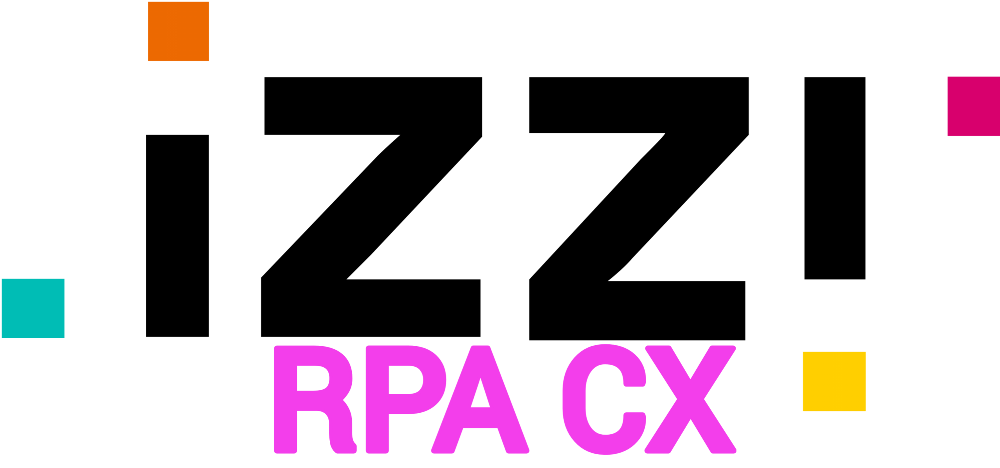

<div class="px-5 min-h-screen flex justify-content-center align-items-center">
    <style>
        .spacio {
            display: flex;
            justify-content: space-between;
            align-items: center;
            width: 75%;
        }
        .circulo {
            background-color: rgba(240, 248, 255, 0.85);
            box-shadow: 0 4px 8px rgba(0, 0, 0, 1);
            border-radius: 50%;
            overflow: hidden;
            transition: transform 0.3s ease;
            width: 500px;
            height: 500px;
            display: flex;
            justify-content: center;
            align-items: center;
        }
        .circulo:hover {
            transform: scale(1.2);
            box-shadow: 0 4px 8px rgba(0, 0, 0, 1);
        }
        .spacio img {
            transition: transform 0.3s ease;
            max-width: 100%;
            height: 100%;
            object-fit: contain;
        }
        .spacio img:hover {
            transform: scale(1.2);
        }
    </style>
    
    <div class="spacio">
        <div class="mb-4 circulo">
            
        </div>
        <div class="mb-4 circulo">
            
        </div>
    </div>
</div>
<p-toast
  [baseZIndex]="99999"
  key="tst"></p-toast>
